Ginger Island
| Ginger Island | |
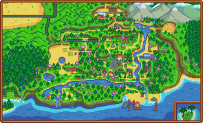 | |
| Occupants: | 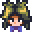 Birdie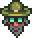 Professor Snail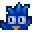 Island Trader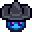 Mr. Qi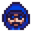 Fizz |
Ginger Island is located within the Fern Islands archipelago and is the only island in the archipelago that the player can visit. It can be accessed after repairing the boat in the back room of Willy's Fish Shop. Purchasing a ticket to ride the boat costs  1,000g, including the return trip, and is the main way to access the island when the shop is open.
1,000g, including the return trip, and is the main way to access the island when the shop is open.
The first time the player rides the boat, a cutscene triggers showing the coast of the region, including some other islands that can be seen on the way. All visits after that, only the animation of Willy getting on the boat and starting to steer it is shown. The boat arrives at a dock on the island with only a single path leading inland at first, as the rest of the island is closed off. The island is largely inhabited by parrots, which can be offered Golden Walnuts to unlock additional areas or features. Ginger Island is rather unique amongst the player-visitable areas of Stardew Valley because similar to the Greenhouse, the current season does not affect which crops can be planted and grown on the island, nor does the current season affect which fish can be caught there.
The player can return to Stardew Valley at any time for free by entering the boat on the southern beach. They will usually arrive back inside the Fish Shop, except on festival days when the path back to the Farm is blocked, in which case the player will be deposited to the Bus Stop instead. If the festival is held on the Beach, the player will be deposited on the bridge leading to the beach south of Pelican Town.
Island South
This is the area where the player first lands. It contains the dock, a small beach with the ruins of a building, and three paths each leading to the other island areas -- Island East, North, and West. Additionally, the warp location for a Warp Totem: Island or Island Obelisk is located in this part of the island. Warping to the island is the only way to access it when Willy's shop is closed.
At first, only the path to the Island East is available, as two large turtles block the paths to Island North and Island West. The player must follow Leo who appears and runs into the jungle in Island East. Interactions in Leo's hut will remove the turtle blocking the northern exit, and upon returning to the beach a Magma Sprite appears and leads the player north to the Volcano. The turtle blocking the path to Island West can be removed by paying the nearby parrot 10 Golden Walnuts.
Beach Resort
After the Island Farmhouse to the west is repaired, the ruins can be rebuilt into a beach resort for 20 Golden Walnuts. From then on a random subset of villagers from Pelican Town will arrive at 11:00 AM and leave at 6:00 PM each non-raining day that isn't a festival day. During this time, the social tab will display the villager in their bathing suit. The player can open/close the resort beginning the following day with the toggle located between the two doors of the changing room. The resort will remain closed until the player reopens it.
After opening the beach resort, Gus will run a bar on the days when he visits.
| Image | Name | Description | Price |
|---|---|---|---|
| Piña Colada | Drink in moderation. | ||
| Beer | Drink in moderation. | ||
| Pale Ale | Drink in moderation. | ||
| Mead | A fermented beverage made from honey. Drink in moderation. | ||
| Cranberry Candy | It's sweet enough to mask the bitter fruit. | ||
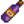 |
Mango Wine | Drink in moderation. | |
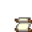 |
Tropical Curry Recipe | A recipe to make Tropical Curry |
Island Southeast
This area is unlocked by building the Island Beach Resort, which clears the debris east of the dock. It contains a star-shaped tide pool, a large rock offshore, and a hidden pirate's cove.
Pirate Cove
The Pirate Cove can be accessed at the east side of Island Southeast through a hidden entrance east of the star-shaped pool. The player can enter the cove at any time to fish in the pool at its southeast or in the small pools near its entrance. These are the only locations in the game where the Stingray can be caught. In addition to the fish shown in the Fishing section below, the player can catch a 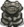
Pirates visit the cove after 8pm on non-rainy even-numbered days of the season. If the player is inside the cove before 8pm on a day when pirates come visiting, the player is automatically removed from the cave and placed outside its entrance, ending any current activity there. The player can, however, reenter the cove. While pirates are visiting, the player can play Darts to win Golden Walnuts. (There are no rewards after the first three times the player wins a game.) There is also a bar where any player who is wearing a Pirate Hat, Eye Patch, Deluxe Pirate Hat, or the Parrot Egg trinket is given Mead once a day.
In Winter, Jellyfish similar to those appearing at the Dance of the Moonlight Jellies festival may be seen in the southmost pool, but they cannot be caught.
Mermaid
On rainy days a Mermaid will appear on the large rock by the shore. If the player places Flute Blocks and tunes them to play the Mermaid's song, she will reward them with 5 Golden Walnuts.
To play the Mermaid's song, place a Flute Block on top or below each set of stones on the shore, then tune each block by the amount of stones. A large stone symbolizes 5, and a small stone symbolizes 1. After tuning all 5 blocks, simply run past each one from left-to-right.
It is possible to solve this puzzle using only one Flute Block by carefully triggering, removing, placing at the next spot, tuning, and playing again, until all 5 notes are played.
| Stone Tuning Key | ||||
|---|---|---|---|---|
| Block 1 | Block 2 | Block 3 | Block 4 | Block 5 |
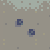 |
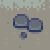 |
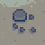 |
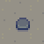 |
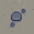 |
| 2 Clicks | 11 Clicks | 9 Clicks | 5 Clicks | 7 Clicks |
| or | ||||
| 1 Click | 10 Clicks | 8 Clicks | 4 Clicks | 6 Clicks |
Island East
This area is reached by walking east from the dock on Island South. It contains a jungle where Fiddlehead Ferns can spawn, and a hut where a boy named Leo lives with a talking parrot. This parrot will give the player hints as to how many Golden Walnuts they have left to find in areas. Outside of the hut is a Banana Shrine. Additionally, the jungle contains a package with 3 Tent Kits.
Gem Birds
A hidden path to the east in the jungle leads to an area with a shrine and four pedestals. The entrance is one square south of the parrot express kiosk and all the way to the east. Each pedestal has an image carved in stone in front of it that corresponds to a section of the island. Interacting with the shrine shows the following message:
- "When dark clouds cry, begin your quest
- To seek the fabled gem-birds four
- Each day, one north, south, east, or west
- Arrange their gifts upon my door"
On rainy days, a single Gem Bird appears in one randomly-selected region of the island (north, south, east, or west). Approaching the Gem Bird causes it to fly away, dropping a gemstone as it does so. The player must collect this gemstone and place it on the bird statue at the shrine that corresponds to the island region in which the Gem Bird appeared.
Gem Birds always appear in at the specific location for their associated island region:
- North: South of the Island Field Office Tent.
- East: In the middle of the path in the jungle towards Leo's hut.
- South: To the southwest of the beach near the docks.
- West: West across the river from the farm, east of Birdie's Hut, at the pond.
The arrangement of the pictures and pedestals corresponds to the traditional compass rose, with north at the top (volcano: north, waves: south, palm tree: east, heart: west). There are five possible gems: Amethyst, Aquamarine, Emerald, Ruby, and Topaz. When all 4 pedestals have been filled correctly, the shrine activates and gives the player 5 Golden Walnuts.
Notes:
- The weather on the island does not correspond to the weather in Stardew Valley. TV weather forecasts show the daily forecast for Ginger Island beginning the day after the player first visits the island.
- A Rain Totem can be used while on the island to force the birds to appear the next day.
- Birds will still appear and drop additional gems even after the puzzle has been solved. The puzzle reward occurs only once per save file, although the statues may still (incorrectly) display plus signs while the player is holding a valid gem near one.
- There are five types of gem bird, each leaving its own type of gem. Of these five, four are randomly selected and assigned randomly to the compass direction where they will appear. Random selection and assignment is accomplished once per save file and is in place before the player first visits Ginger Island on a rainy day.
- The gems placed do not need to be the same ones dropped by the birds - a gem of the correct type from any source will work. Further, a bird need not even be approached; The gems can be guessed (there are 2, 6, 24, or 120 possible combinations depending on how many birds have been approached so far).
Island North
This area includes everything reached by walking north from the docks on Island South. A golden Joja parrot can be found in the far north of this area, to the northwest of the entrance to the Volcano Dungeon.
Island Trader
- Main article: Island Trader
The Island Trader is a bluebird merchant who runs a trading stand in Island North. The merchant's parrot is unlocked by building the Island Farmhouse. Trading is then unlocked when the player gives the parrot 10 Golden Walnuts.
The trader has a rotating stock of island-themed items, not available by purchase with any currency, but only by barter in exchange for other items. Barter items are obtained by Foraging, many of which are types found on Ginger Island. Among the exclusive trade items are many types of Furniture that have island-based themes. The Galaxy Soul item is subject to some availability restrictions.
Dig Site
West of the Island Field Office is a broken bridge which can be repaired by parrots in exchange for 10 Golden Walnuts. Once repaired, it leads to the Dig Site, an area similar to the Quarry. Rocks, Bone Nodes, Clay Nodes, and Mahogany Tree seeds have a chance of spawning there every day.
East of the stairs north of the Dig Site is the Ginger Island Mushroom Cave. Initially, there is a boulder blocking the entrance, and someone behind it is calling for help. Place any bomb to remove the boulder, thus freeing Professor Snail and unlocking the Island Field Office. The cave spawns random new mushrooms every day. Unlike the farm's cave, its mushrooms grow directly on the ground, so players benefit from the Gatherer or Botanist professions when collecting them. Players can buy perfection waivers from Fizz in this cave.
Island Field Office
- Main article: Island Field Office
The Island Field Office tent is found in the north central region of Island North, on the way towards the volcano. The office remains empty until Professor Snail is rescued from the Mushroom Cave at the Dig Site. Thereafter, the player may donate fossils and answer the Island Survey, in return for various rewards.
Volcano Dungeon
- Main article: Volcano Dungeon
At the farthest north is a volcano dungeon with ten levels, eight of which are randomly generated similar to the Skull Cavern. The fifth level has a shop, and at the tenth and last level is the Forge, where tools and weapons can be upgraded using Cinder Shards.
To access the dungeon, a watering can is required to make a path through the lava. This path does not persist between days and must be remade to cross again. After the player reaches the Forge and unlocks the door needed to exit (west of the Forge, east of the starting area), a parrot will perch near the lava river offering to unlock a permanent bridge in exchange for 5 Golden Walnuts.
The lava river in the starting area can be followed to the left to find a hidden exit. The exit leads to the river north of the dig site, where the player can find 2 Golden Walnuts.
Island West
This area includes everything reached by walking west from the docks on Island South. The entrance to this area is initially blocked by a sleeping turtle, which can be wakened by giving a nearby parrot 10 Golden Walnuts. This parrot will only appear after the first parrot in Leo's house has received its own Golden Walnut.
The area is divided north to south by a river which may be crossed over any one of three plank bridges. The Farm, Gourmand Frog, Parrot Express, and Shipwreck are to its east, while the Pond, Birdie's Hut, Green Whack-A-Mole, Qi's Walnut Room, Tiger Slime Grove, and Colored Crystals Puzzle are to its west.
Island West contains 879 plantable tiles which are accessible in normal gameplay:
- 777 on the main farmland
- 51 on the big chunk of land west of the river
- 42 on the patches of land around the pond
- 1 hidden tillable tile in the Tiger Slime Grove
- 5 on a small patch of land by the Parrot Express, north of the farm.
- 1 hidden tillable tile near the Parrot Express
- Total 2 on both sides of suspension bridge
There are also 33 tiles above Qi's Walnut Room, which are inaccessible without using chairs to leave the map.
The Farm
There is a large area where crops can be planted. Initially it is covered in logs, stones, and weeds just like the Stardew Valley farm is when the player first arrives. Sprinklers can be placed here and fruit trees can be planted. Crows won't spawn on this farm either, so Scarecrows aren't necessary. Just like with the Greenhouse, any crop can be grown on the Ginger Island farm regardless of the season.
There is a dilapidated farmhouse that the parrots will repair in exchange for 20 Golden Walnuts. It's a 4 room house with a kitchen and one Tropical Bed per farmer on the save file. It comes with a shipping bin. Once the house is ready, the parrots will build a mailbox for an additional 5 Golden Walnuts and a Farm Obelisk after that for 20 Golden Walnuts. Upon building the Farm Obelisk, the player will receive 1 Warp Totem: Island.
Gourmand Frog
After the parrots repair the Island Farmhouse, a cave appears in the northeast corner of the island farm. In it is the Gourmand Frog who reminisces about days when specific crops were growing on the farm and asks the player to grow them. Once they're grown, return to him to receive Golden Walnuts.
| Solution |
| This is a farming task. The Gourmand Frog asks the player to grow three crops, one crop at a time: first Melon, then Wheat, then Garlic. For each crop, grow at least one plant on the Island Farm until it is mature, but do not harvest it. Interact with the frog and tell it the crop is ready. That triggers a cutscene in which the frog gives the player 5 Golden Walnuts but does not take the crop. The crops can be grown at any time, including all at once, but each plant, before it is harvested, must be presented to the frog individually in the order of the requests. |
Birdie's Shack
On the west side of the beach there is a shack which is where Birdie lives. Upon meeting her she will give the player the quest "The Pirate's Wife". After the quest is complete, she no longer has any quests, but will speak with the player.
Green Whack-a-Mole
There is a green Duggy moving from hole to hole, which can be "whacked" with the watering can for 1 Golden Walnut. The player can also cover three of the holes with placeable objects, and hit the mole with an axe or pickaxe.
Shipwreck
On the southeast part of the beach, below the farm area, there is a shipwreck which the player can enter to collect a Golden Walnut. When speaking to Birdie for the first time, she explains that her husband was the captain of the ship.
Tiger Slime Grove
North of the pond is a small grove. Mahogany Trees will grow there, and several Tiger Slimes will spawn each day.
Colored Crystals Puzzle
This puzzle is found in a cave northeast of the Tiger Slime Grove.
Upon entering the cave, click on the lion to initiate a game of Simon Says. Winning the game yields three Golden Walnuts. If any round is failed, the game will restart at round 1.
The game initially has 5 rounds, and gets faster every round. Failing several times will reduce the difficulty of the game. Four fails makes rounds 3+ slower, 6 fails makes rounds 4 and 5 even slower, and 8 fails will cause the final round to be skipped.
Qi's Walnut Room
- Main article: Qi's Walnut Room
A room accessible by getting a total of 100 Golden Walnuts. Inside is a Perfection Tracker, a Special Order Board similar to the one in Pelican Town, and a Vending Machine that sells items in exchange for Qi Gems.
The Beach
On the southwest side of the beach there are tide pools where Sea Urchins and Coral can spawn. The southeast features mussel rocks which can be mined for Mussels (and 5 hidden Golden Walnuts).
Transportation
Parrot Express
The Parrot Express is a site-to-site transportation system on the island that can take the player to and from any of five sites: Volcano, Farm, Dig Site, Jungle, and Docks. The Dig Site is unavailable to the express until the bridge to the site has been repaired, after which its inclusion is automatic.
To unlock the express, the player must pay 10 Golden Walnuts to the parrots stationed at the "farm" location. That site is north of the Island Farm, up the stairs and through the dense trees. This Island West location implies that the site cannot be reached nor the express activated until all four compass directions are open for travel on the island.
When the player selects a travel location at an express station, an animation shows the player walking into a small structure that two parrots then lift with vines. The player then appears in the selected location with no further animation.
Fishing
Island North
| Time | |||||||||||||||||||||
|---|---|---|---|---|---|---|---|---|---|---|---|---|---|---|---|---|---|---|---|---|---|
| 6 | 7 | 8 | 9 | 10 | 11 | 12 | 1 | 2 | 3 | 4 | 5 | 6 | 7 | 8 | 9 | 10 | 11 | 12 | 1 | ||
| Blue Discus | |||||||||||||||||||||
Island South & Southeast
| Time | |||||||||||||||||||||
|---|---|---|---|---|---|---|---|---|---|---|---|---|---|---|---|---|---|---|---|---|---|
| 6 | 7 | 8 | 9 | 10 | 11 | 12 | 1 | 2 | 3 | 4 | 5 | 6 | 7 | 8 | 9 | 10 | 11 | 12 | 1 | ||
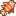 Lionfish |
|||||||||||||||||||||
| Sunny day only | |||||||||||||||||||||
Pirate Cove
| Time | |||||||||||||||||||||
|---|---|---|---|---|---|---|---|---|---|---|---|---|---|---|---|---|---|---|---|---|---|
| 6 | 7 | 8 | 9 | 10 | 11 | 12 | 1 | 2 | 3 | 4 | 5 | 6 | 7 | 8 | 9 | 10 | 11 | 12 | 1 | ||
| Sunny day only | |||||||||||||||||||||
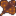 Stingray |
|||||||||||||||||||||
Island West
Note that there are two types of water in Ginger Island West: freshwater and ocean. The southern-most plank bridge in the river is the divider between the two. The ocean is to the west and south; the pond and river north of the southern-most plank bridge are freshwater.
| Time | |||||||||||||||||||||
|---|---|---|---|---|---|---|---|---|---|---|---|---|---|---|---|---|---|---|---|---|---|
| 6 | 7 | 8 | 9 | 10 | 11 | 12 | 1 | 2 | 3 | 4 | 5 | 6 | 7 | 8 | 9 | 10 | 11 | 12 | 1 | ||
| Ocean | |||||||||||||||||||||
| Lionfish | Ocean | ||||||||||||||||||||
| Ocean | |||||||||||||||||||||
| Ocean | Sunny day only | ||||||||||||||||||||
| Ocean | |||||||||||||||||||||
| Ocean | |||||||||||||||||||||
| Blue Discus | Freshwater | ||||||||||||||||||||
| Freshwater | |||||||||||||||||||||
| Freshwater | |||||||||||||||||||||
The Forge
- Main article: Forge
Lava Eels and Trash can be caught at any time of day. One 'Physics 101' painting can also be caught.
Gallery
Island North
Island East
Island South
Island West
Island West irrigated tiles map (taro and rice)
Island South-East
Island South-East Cave
Island South-East Cave When Populated
Island Volcano Forge
Trivia
- Colored Gems in the cave crystal puzzle are reminiscent of Singing Stones, a piece of furniture obtained by donating 21 Minerals to the Museum.
- There's a pair of pirates fighting in the Pirate Cove that are a reference to the Mario Bros.
- Jellyfish similar to those seen at the Dance of the Moonlight Jellies festival often appear in the water after 6:00 pm, but only in Winter and when it is not raining.
History
- 1.5: Introduced.
- 1.6: Added world map for Ginger Island, which is visible when visiting the Island. The Mini-Jukebox can now be played on the Ginger Island Farm. The Pirate Cove bartender accepts the Parrot Egg trinket as pirate attire. Players now receive one Warp Totem: Island upon building the Farm Obelisk. 3 Tent Kits have been added to the Island East area. Gourmand Frog dialogue changed. Added golden Joja parrot and perfection waivers.
| Locations | |
|---|---|
| Locations | Backwoods • Beach • Bus Stop • Calico Desert • Cindersap Forest • Farm • Farm Cave • Farm Pond • Graveyard • Ginger Island • Mastery Cave • Minecart • Mines • Mountain • Mutant Bug Lair • Pelican Town • Quarry • Quarry Mine • Railroad • Secret Woods • Sewers • Skull Cavern • Summit • Tunnel • Volcano Dungeon • Witch's Swamp |